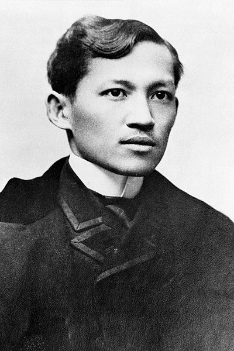
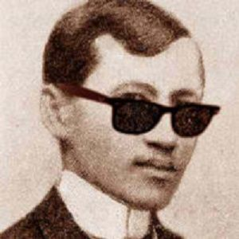
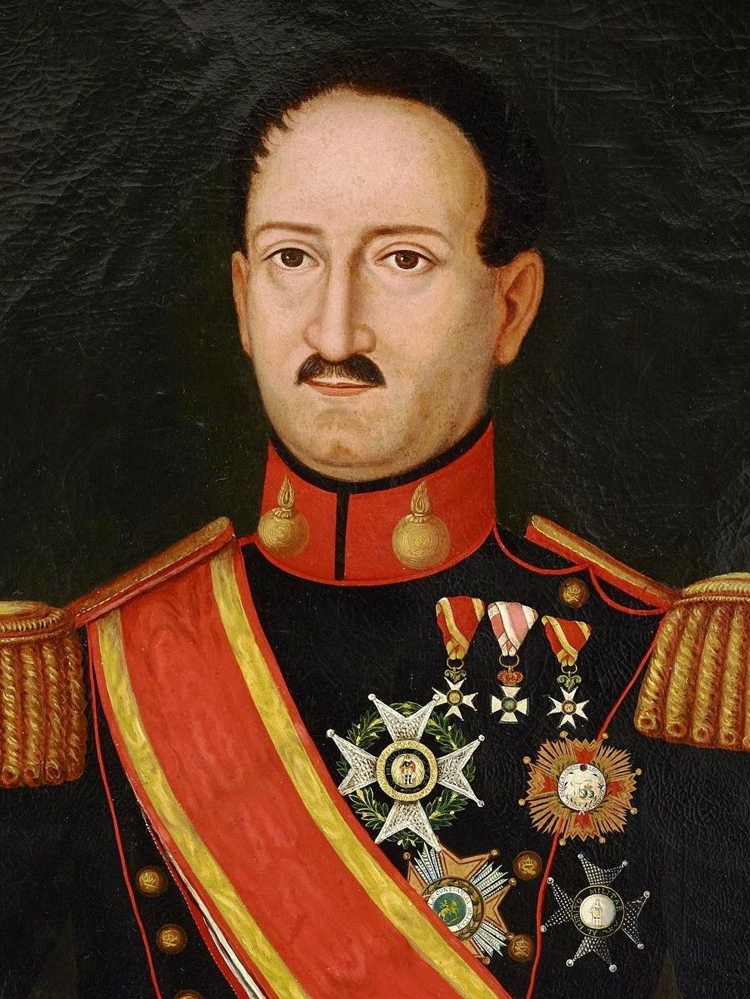
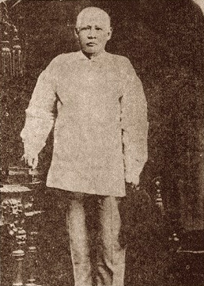
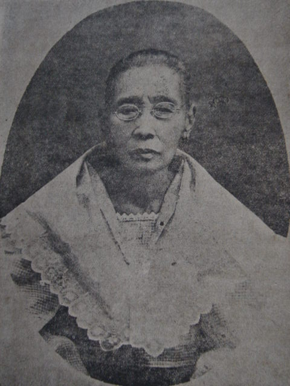

Rizal's Life
Who is Jose Rizal?
A Filipino nationalist, writer and polymath active at the end of the Spanish colonial period of the Philippines. He is considered a national hero of the Philippines.
Full Name: Jose Protacio Rizal Mercado Y Alonso Realonda
Birth date: June 19, 1861
Time when Jose Rizal was born: 11 pm - 12 am
Birth place: Calamba, Laguna
Don Kikoy and Dona Lolay's youngest son was named Jose Protacio Because...
Named after San Jose, husband of mary, because Doña Teodora was devoted
Born on June 19 1861 before midnight, feast of San Protacio
His nickname is "Pepe" because of Jose P.
Jose Rizal Baptized by Fr. Rufino Collantes only at 3 days old.

Rizal at Realonda in the Family's Name
Gov. Gen. Narciso de Claveria decreed in 1849 that Filipinos must get another family name from the Catalogo Alfabetico de Apellindos.
Rizal wasn't the most physically attractive
According to the family, he was of weak constitution, had a small frame of a body and an abnormally large head. This is why an Aya had to be assigned to keep watch over him as he was prone to tripping because of the imbalance caused by the big head.
Rizal stood at around five feet two inches high. Length of pants: 41 inches, Waist: 25-26 inches, Hips: 18 inches, Midway: 9 inches, Cuff: 7 3/4 inches.
For the head we have measurements of his hats that prove family tradition right: 6.5 inches across and inside the hat, from front to rear was eight inches.
He used stiff collars that measured from: 14.5 inches to 14 3/4 inches Shoulder width: 16 inches, Armpit to armpit: 17 inches, Base of collar to hem: 31 inches, Arm length: 24 and 3/4 inches, Chest: 37 inches.
His left shoulder wa lower than the right He had a prominent jaw His voice is soft and he spoke with slight lisp His right eye is bigger than the left.
Rizal's Parents
Father: Don Francisco Mercado (1818 - 1898) Born in Binan, Laguna on May 11, 1818 "Teniente/Don Kikoy" Studied Latin and Philosopy at the College of San Jose in Manila Became a tenant farmer of the Dominican-owned hacienda.
A hardly and independent minded man, who talked less and worked more, and was strong in body and valiant in spirit Don Francisco Mercado died in Manila on January 5, 1898 at the age of 80 Rizal affectionately called him "a model of fathers".

Mother: Dona Teodora Alonso Realonda (1826 - 1911) Born in Manila on November 8, 1826 Educated at the College of Santa Rosa , a well known college for girls in the city A remarkable woman, possessing refined culture, literary talent, business ability, and the fortitude of Spartan women.
Dona Teodora is a woman of more than ordinary culture: she knows literature and Speaks Spanish ( according to Rizal) Died in Manila on August 16, 1911 at the age of 85.
Rizal's Siblings
~ Oldest of the Rizal children
~ Nicknamed Neneng
~ Married Manuel T. Hidalgo of Tanawan, Batangas
~ Older brother and confident of Jose Rizal
~ Was second father to Rizal
~ Immortalized him in Rizal's first novel Noli Me Tangere as the wise Pilosopo Tasio
~ Rizal regarded him as the “most noble of Filipinos”
~ Her pet name was Sisa
~ Married to Antonio Lopez (nephew of Father Leoncio Lopez), a school teacher of Morong
~ Ypia was her pet name
~ Married Silvestre Ubaldo, a telegraph operator from Manila
~ Married to Mariano Herbosa of Calamba, who was a nephew of Father Casanas
~ Herbosa died of cholera of 1889 and was denied Christian burial because he was a brother in law of Jose Rizal
~ Biang was her nickname
~ Married Daniel Faustisno Cruz of Biñan, Laguna
~ The greatest Filipino hero and peerless genius
~ Nickname was “Pepe”
~ Liked with Josephine Bracken, Irish girl from Hong Kong
~ Had a son but this baby boy died a few hours after birth; Rizal named him “Fransico” after his father and buried him in Dapitan
~ Her pet name was Concha
~ Died of sickness at the age of 3
~ Her death was Rizal's first sorrow of life
~ Her pet name was Panggoy
~ Died an old maid at the age of 80
~ Trining was her pet name
~ She died also an old maid in 1951 at the age of 83
~ Youngest of the Rizal children
~ Her pet name was Choleng
~ Married of Pantaleon Quintero of Calamba